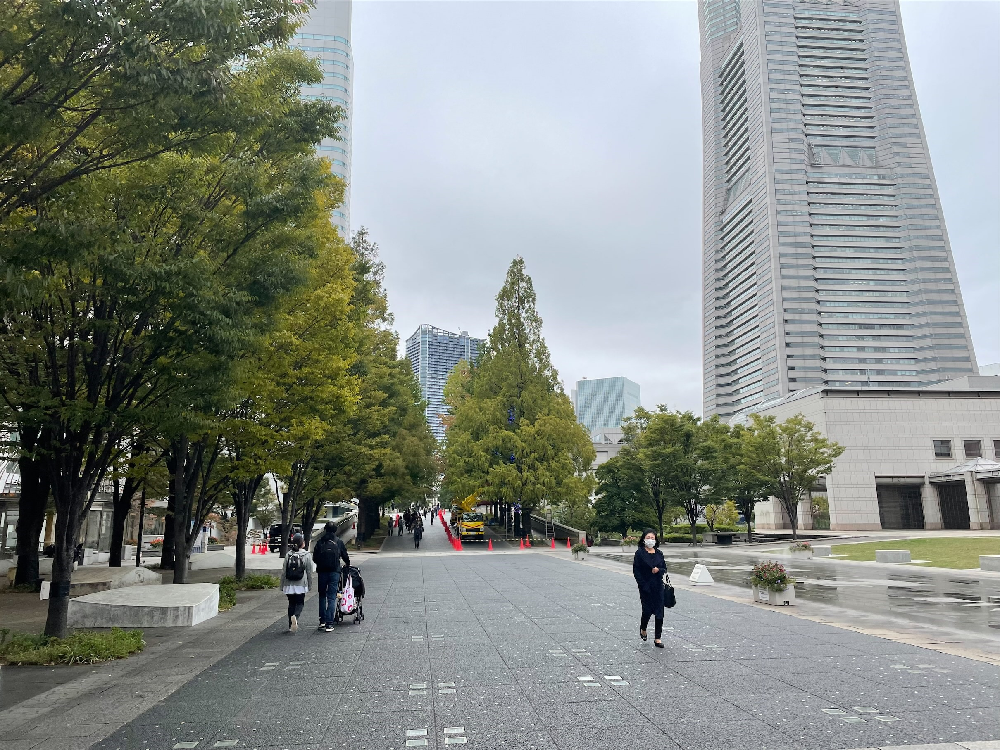
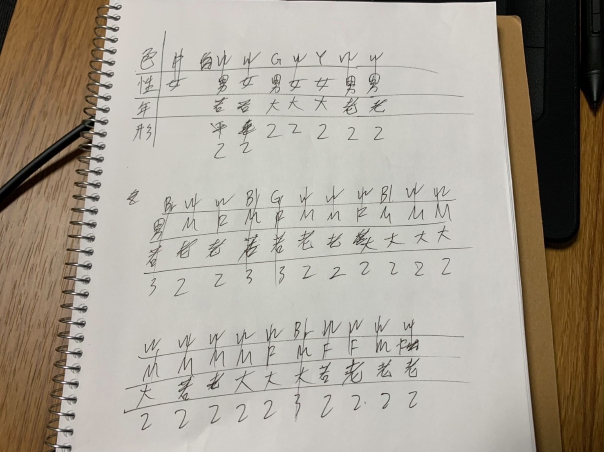
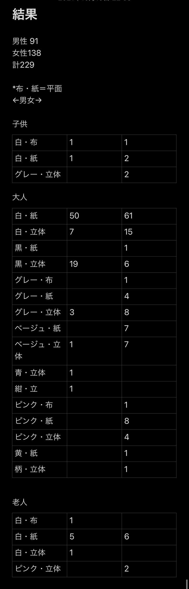

観察振り返り
衣
観察内容
観察場所→美術館前

前半–1時間マークイズの前の通りで集計
後半-1時間珍しいマスクを求めマークイズの中を徘徊
集計の科目→ 1色 2男女 3年代 4形
観察結果

紙にカウント

男性91 女性138 計229
観察まとめ
・男女ともに白が多数派
・男性は白黒が多数なのに対し、女性はピンク等比較的色彩豊かな印象
・色のついたマスクは若年層に集中していた
・柄物、派手なものは服装の派手な女性と子供に見られた
・マスクの未着用は子供、外国人カップル、老人に数人見られた